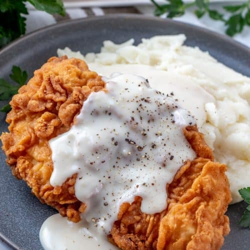

Chicken Fried Chicken

Chicken Fried Chicken
Easy and delicious, this Chicken fried chicken is a wonderful dinnertime recipe that brings the whole family to the table, with a short ingredient list, this meal is simple as it is comforting!
A southern classic and a family favorite dinner time meal, this recipe could also be used for chicken fried steak! Not only is it comforting, this recipe is sure to please and feed a whole crowd. Golden and crispy, this main dish goes excellent with mashed potatoes on the side!
Ingredients
- 4 boneless, skinless chicken breasts(about 2 pounds)
- 1 and a half cups all-purpose Flour
- Half tsp kosher salt
- 1 tsp black pepper
- A quarter teaspoon cayenne
- 2 eggs
- 1 cup buttermilk
- Oil for frying
- Cream gravy, for serving
Steps
- Pound the breast until they are 1/4 inch thick.
- Mix together the flour with the salt, black pepper, and cayenne and place on a plate. Whish together the eggs with the buttermilk. Lightly sprinkle the breasts with salt and pepper then dredge each into the flour. Dip the flour-coated breasts into the eggs and then dredge in flour again. Place the breaded chicken breasts on a sheet pan.
- Heat up the oven to 200 degrees. In a large heavy skillet, such as a cast-iron skillet, on medium-high heat up an inch of oil to 350 degrees for about 5 minutes. If you don't have a thermometer, you can test the temperature by sticking a wooden spoon into the oil, If it bubbles around the spoon, it should be ready.
- Working in batches, gently lower each breast into the oil and cook for 2 minutes per side, or until lightly browned, turning once. Drain on a paper towel and place in the oven while you fry the remaining breasts.
- Serve with cream gravy.